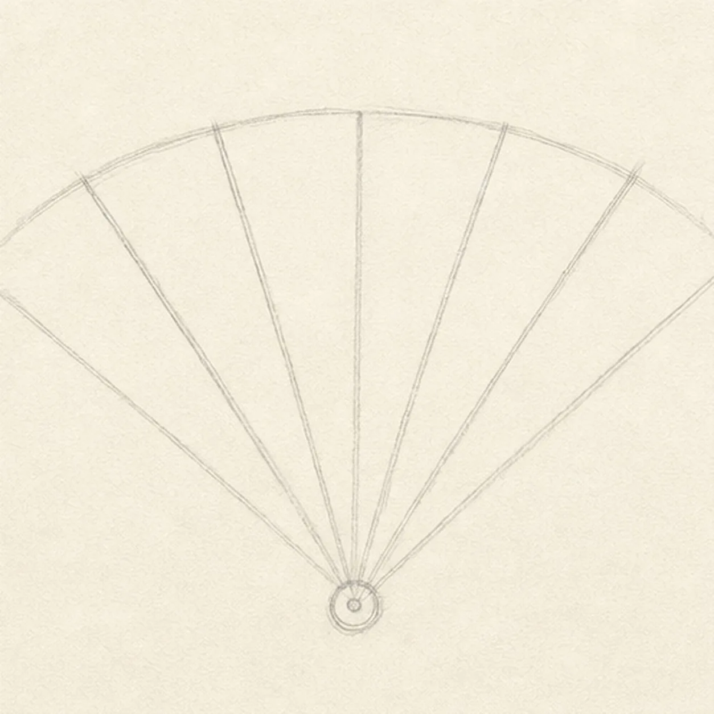
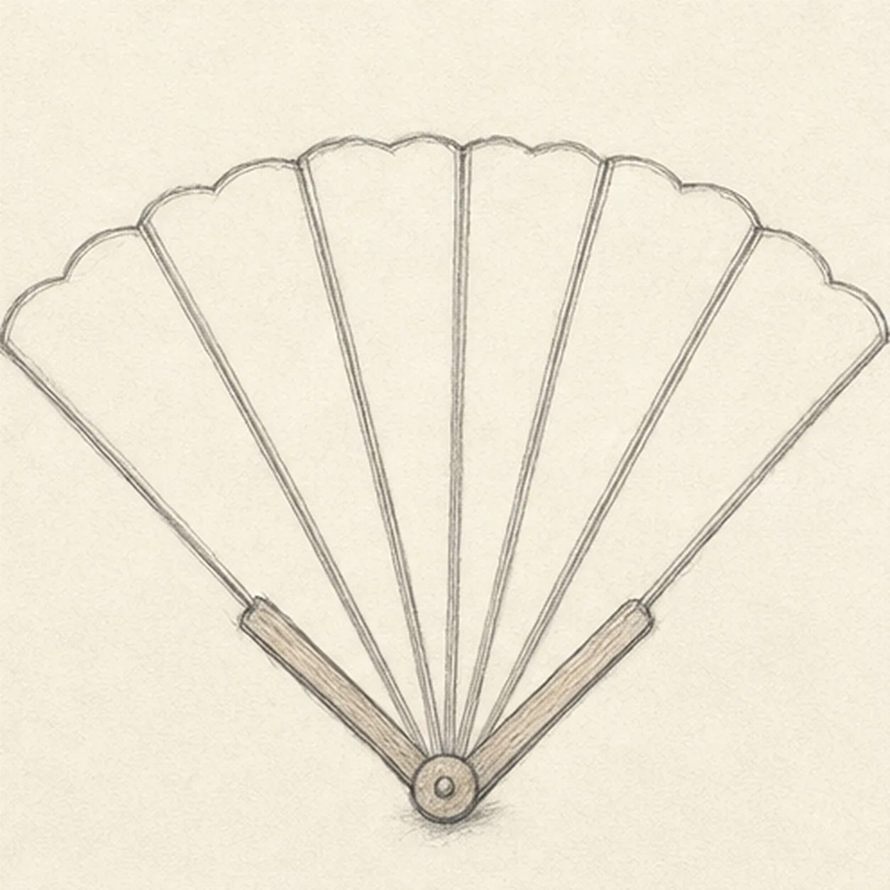
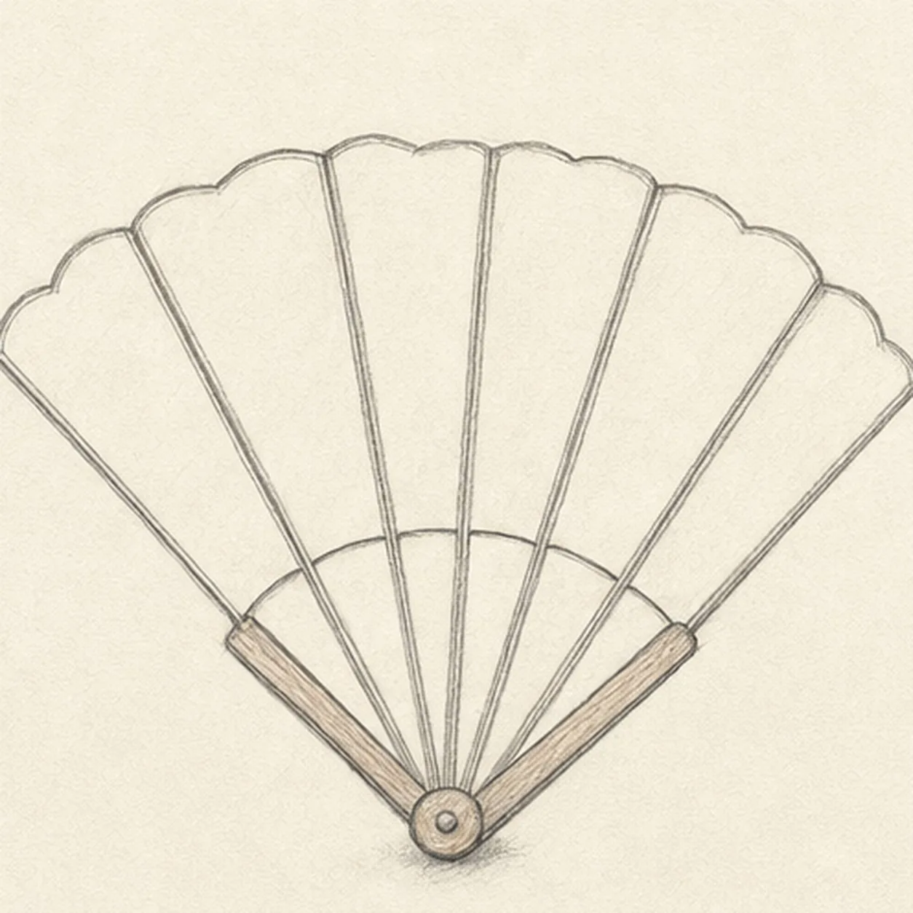
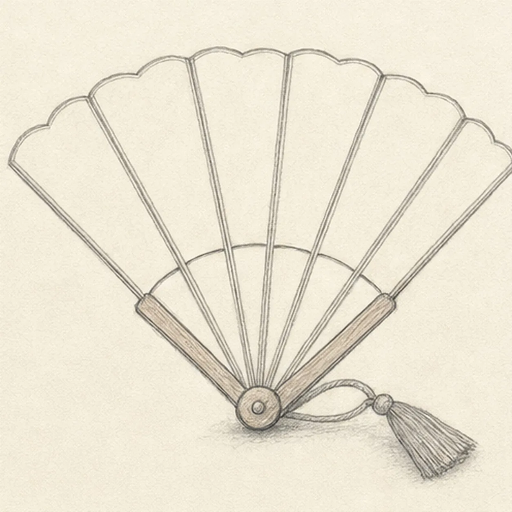
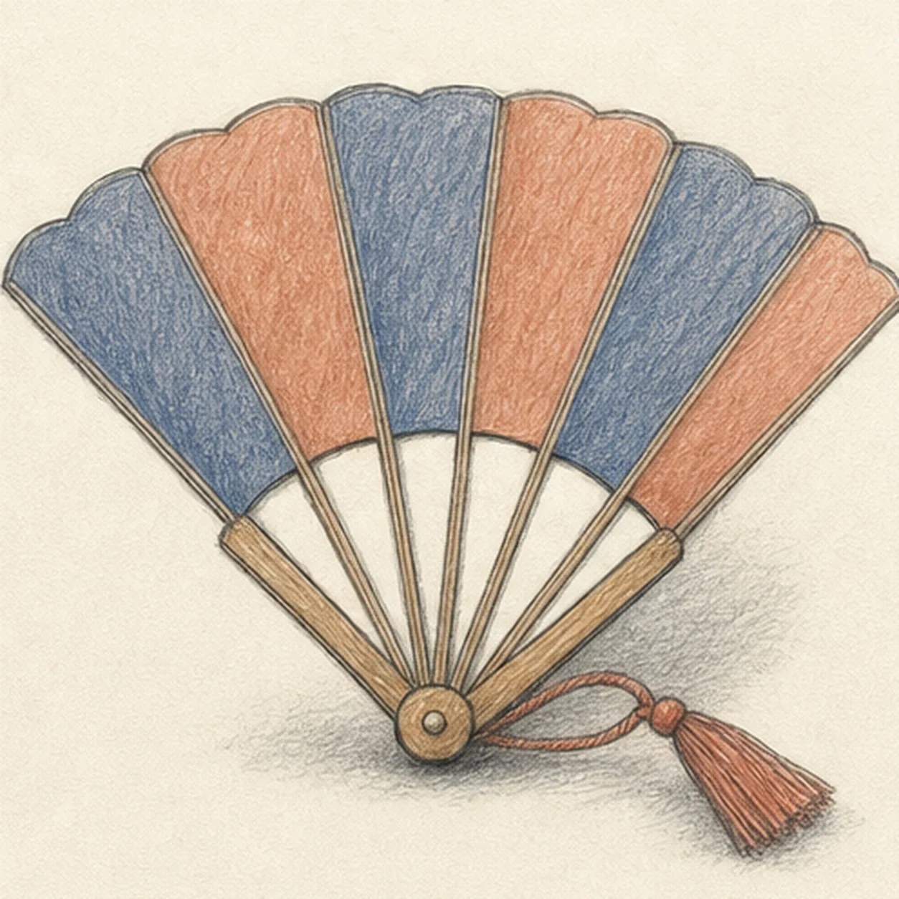

From the archive
Let's draw a folding hand fan
Treat this as one small practice round: build the subject lightly, notice the shapes, then darken only the lines that help the finished sketch.
-
01

Open the fan geometry
Place one low pivot and a shallow top arc, then draw exactly seven radial guides: two outside guard rays with five evenly spaced inner ribs between them.
Sketch tip: Ghost the outside rays first, then use the negative spaces between them to place five inner ribs. Count seven total lines before moving on; the six broad wedges should feel similar without becoming mechanically perfect.
-
02

Wrap the leaf and handles
Wrap the guides with the complete scalloped leaf, two sturdy wooden guard handles, five inner ribs, and one round pivot cap.
Sketch tip: Rotate the page for the long rib strokes and let the top edge make one soft scallop over each of the six panels. Keep both guard handles a little heavier than the inner ribs.
-
03

Fold the fan panels
Clarify the six broad fold channels, lower leaf edge, and simple rib joints while keeping all seven ribs attached to the same pivot.
Sketch tip: Trace outward from the pivot rather than guessing from the top edge. Squint at the fan and compare the six empty wedges; one very narrow wedge will make the color rhythm feel accidental.
-
04

Hang the tassel
Add one cord loop from the viewer-right side of the pivot and finish it with one compact tapered tassel beside the right guard handle.
Sketch tip: Reserve a little paper between cord and handle so both stay readable. Draw the tassel as one simple wedge first, then add only a few directional strands.
-
05

Shade the folds and color
Add graphite value along the existing folds, warm brown to the ribs and handles, alternating dusty indigo and muted terracotta to the six leaf panels, paper highlights, and one broken shadow.
Sketch tip: Pull colored-pencil strokes from pivot toward the scalloped edge so they follow the fan's spread. Leave pale channels at the ribs and stop before the paper grain fills in.
-
06

Set the fan's final rhythm
Strengthen the keeper contours and clarify the established seven ribs, six panels, pivot, cord, tassel, restrained colors, highlights, and broken shadow.
Sketch tip: Count seven ribs, six broad color wedges, one cord, and one tassel, then stop. Your color rhythm and scallop shapes can vary while the pivot-and-rib construction stays the same.
![Handmade graphite and restrained colored-pencil sketch of one pair of vintage binoculars in a three-quarter view with exactly two forest-green tapered barrels, exactly two large blue-gray objective lenses, exactly two charcoal eyepieces, one central hinge, one ridged focus wheel, simple grip ribs, small brass hardware, one continuous warm-brown leather strap forming a broad loop beneath the binoculars, exactly one brass buckle, one visible brass side ring, open paper highlights, and one broken graphite tabletop shadow](../assets/vintage-binoculars-with-strap-finished-v1.webp)